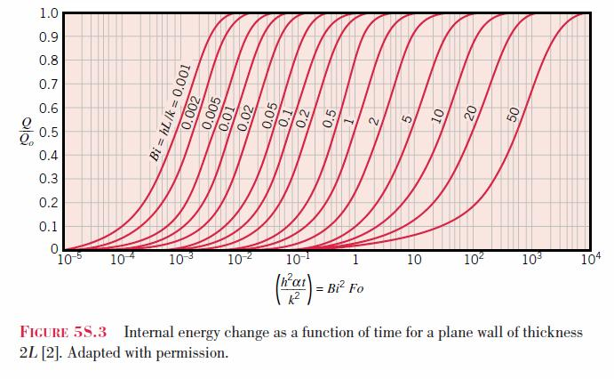
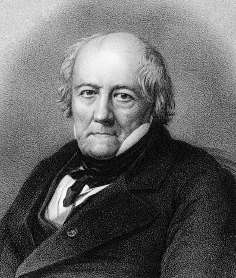

Hitos Históricos
Explora la evolución cronológica de la transferencia de calor y la termodinámica. Filtra y busca los aportes de los científicos que sentaron las bases de la física moderna.
Laboratorio de Simulaciones
Interactúa con experimentos virtuales y herramientas numéricas en tiempo real. Ajusta variables físicas para observar de manera práctica las leyes de conducción, convección y radiación.
Ley de Fourier de la Conducción (1822)
La conducción térmica es el mecanismo de transferencia de calor que ocurre a través de un medio debido al gradiente de temperatura. La formulación diferencial de la Ley de Fourier establece que el flujo de calor por unidad de área ($q''$ en $\text{W/m}^2$) es directamente proporcional al gradiente de temperatura ($\nabla T$):
Donde $k$ es la conductividad térmica del material ($\text{W/m}\cdot\text{K}$). El signo negativo es fundamental: expresa físicamente que la energía se transfiere espontáneamente en la dirección de temperatura decreciente (cumpliendo la Segunda Ley de la Termodinámica).
A nivel microscópico, la conducción es un proceso de difusión de energía impulsado por la actividad atómica o molecular:
- En sólidos metálicos: Se debe a la migración de electrones libres combinada con las vibraciones de la red cristalina (fonones), lo que les otorga una conductividad $k$ muy elevada.
- En sólidos aislantes y dieléctricos: Ocurre exclusivamente por propagación de ondas de vibración de la red (fonones).
- En fluidos (líquidos y gases) EN REPOSO: ¡La conducción también ocurre en fluidos! Se transmite mediante colisiones aleatorias y difusión del movimiento traslacional, rotacional y vibracional de las moléculas, siempre y cuando el fluido permanezca estrictamente estático (en reposo).
Para un estado estable unidimensional sin generación de calor, integrando la ley de Fourier se obtiene la forma global de transferencia de calor total ($q$ en $\text{W}$), la cual es análoga a la Ley de Ohm ($I = \frac{\Delta V}{R}$): $q = \frac{T_1 - T_2}{R_t}$
- Pared Plana: $R_t = \frac{L}{kA}$
- Casquete Cilíndrico: $R_t = \frac{\ln(r_2/r_1)}{2\pi kH}$
- Casquete Esférico: $R_t = \frac{r_2 - r_1}{4\pi k r_1 r_2}$
Impacto de variables: Materiales aislantes tienen $k$ pequeño. Reducir el espesor $L$ o aumentar la diferencia de temperaturas dispara linealmente la tasa de transferencia $q''$.
2. Ley de Radiación de Max Planck (1900)
Planck postuló que la energía electromagnética solo se emite o absorbe en paquetes discretos llamados cuantos, donde $E = h\nu$ ($h$ es la constante de Planck, y $\nu$ la frecuencia). Esto resolvió la "catástrofe ultravioleta".
Ley de Stefan-Boltzmann: El poder emisivo total es proporcional a la cuarta potencia de la temperatura absoluta: $E = \sigma T^4$, donde $\sigma = 5.67 \times 10^{-8} \text{ W}/(\text{m}^2\text{K}^4)$. ¡Observa cómo se dispara la energía al aumentar $T$!
Teoría Cinética de los Gases: Distribución de Maxwell-Boltzmann (1860)
James Clerk Maxwell y Ludwig Boltzmann formularon la distribución estadística de las velocidades de las partículas en un gas ideal. Esta fue la primera ley estadística en la física, demostrando que la temperatura macroscópica no es más que la manifestación del caos cinético microscópico de los átomos.
La probabilidad de encontrar una partícula con velocidad $v$ es: $$ f(v) = 4\pi \left(\frac{m}{2\pi k_B T}\right)^{3/2} v^2 e^{-\frac{m v^2}{2 k_B T}} $$
Observación: Fíjate cómo al calentar el gas, la campana se aplana y se desplaza hacia la derecha (átomos más rápidos). Si cambias a un gas más pesado (como el Xenón), los átomos se mueven mucho más lento a la misma temperatura.
Variables de la Ecuación:
- $f(v)$: Densidad de Probabilidad (fracción de átomos que viajan a la velocidad $v$).
- $v$: Velocidad de la partícula (m/s).
- $m$: Masa de una sola molécula (kg).
- $T$: Temperatura absoluta (K).
- $k_B$: Constante de Boltzmann ($1.38 \times 10^{-23}$ J/K), el puente entre la temperatura macroscópica y la energía cinética microscópica.
Sustancias Puras: Propiedades del Agua (IAPWS-IF97)
Una sustancia pura tiene composición química homogénea e invariable (como el agua). Su estado termodinámico queda completamente definido por dos propiedades intensivas independientes — por ejemplo, presión $P$ y temperatura $T$ — excepto dentro de la región de mezcla saturada, donde $T$ y $P$ dejan de ser independientes ($T = T_{sat}(P)$) y se necesita la calidad $x$ como segunda propiedad.
Ajusta $P$ y $T$ (o activa el modo de mezcla saturada y ajusta la calidad $x$) para calcular en tiempo real el volumen específico $v$, la energía interna $u$, la entalpía $h = u + Pv$ y la entropía $s$ del agua, usando la formulación industrial IAPWS-IF97 (la misma base de las tablas de vapor de los libros de termodinámica), y observa en qué región del diagrama te encuentras.
Regiones del diagrama:
- Líquido subenfriado — a la temperatura dada, $P > P_{sat}(T)$.
- Líquido saturado — sobre la línea de saturación, calidad $x = 0$.
- Vapor húmedo (mezcla saturada) — dentro del domo, $0 < x < 1$.
- Vapor saturado seco — sobre la línea de saturación, calidad $x = 1$.
- Vapor sobrecalentado — a la temperatura dada, $P < P_{sat}(T)$.
- Punto crítico — $P_c = 22.064$ MPa, $T_c = 373.95\,^\circ\text{C}$; más allá no existe distinción entre líquido y vapor.
Ley de la Inversa del Cuadrado (Atenuación por Distancia)
En el vacío, la radiación térmica emitida por una fuente puntual esférica se esparce en todas direcciones. La intensidad de radiación incidente $I$ decae con el cuadrado de la distancia $r$. La fórmula es: $$I = \frac{P}{4 \pi r^2}$$ donde $P$ es la potencia térmica total de la fuente.
Efecto Geométrico: Si duplicas la distancia de la fuente, el calor que recibes no se reduce a la mitad, sino a una cuarta parte. Este principio es crucial en astrofísica, el diseño de calentadores infrarrojos y la seguridad en hornos industriales.
Superficies Extendidas (Aletas)
Las aletas se usan para aumentar el área de disipación de calor. Aquí vemos el perfil de temperatura a lo largo de una aleta para distintas condiciones en la punta. Juegue con los parámetros para entender mejor el fenómeno. Note que las ecuaciones también aplican a otras formas de aletas, como las rectangulares:
Distribución de Temperatura $\left( \frac{T(x) - T_\infty}{T_b - T_\infty} \right)$
- Aislada: $$ \frac{\cosh(m(L-x))}{\cosh(mL)} $$
- Convección: $$ \frac{\cosh(m(L-x)) + (h/mk) \sinh(m(L-x))}{\cosh(mL) + (h/mk) \sinh(mL)} $$
- Temp. Especificada ($T_L$): $$ \frac{(\theta_L/\theta_b) \sinh(mx) + \sinh(m(L-x))}{\sinh(mL)} $$
- Infinitamente Larga: $$ e^{-mx} $$
- Longitud Corregida ($L_c$): $$ \frac{\cosh(m(L_c-x))}{\cosh(mL_c)} $$
Tasa de Transferencia de Calor ($q_f$)
Evaluada en la base ($x=0$) con la Ley de Fourier: $q_f = -k A_c \left. \frac{dT}{dx} \right|_{x=0}$. Siendo $M = \sqrt{hPkA_c}(T_b - T_\infty)$:
- Aislada: $$ M \tanh(mL) $$
- Convección: $$ M \frac{\sinh(mL) + (h/mk)\cosh(mL)}{\cosh(mL) + (h/mk)\sinh(mL)} $$
- Temp. Especificada ($T_L$): $$ M \frac{\cosh(mL) - (\theta_L/\theta_b)}{\sinh(mL)} $$
- Infinitamente Larga: $$ M $$
- Longitud Corregida ($L_c$): $$ M \tanh(mL_c) $$
donde $m = \sqrt{hP/kA_c}$, $\theta_b = T_b - T_\infty$, $\theta_L = T_L - T_\infty$ y $L_c = L + A_c/P$.

| Condición | $T_L$ (°C) | $T(x)$ (°C) | $q_f$ (W) | $\eta$ (%) | $\epsilon$ |
|---|---|---|---|---|---|
| Aislada | 0.0 | 0.0 | 0.0 | 0.0 | 0.0 |
| Convección | 0.0 | 0.0 | 0.0 | 0.0 | 0.0 |
| Long. Corregida | 0.0 | 0.0 | 0.0 | 0.0 | 0.0 |
| Específica | 0.0 | 0.0 | 0.0 | 0.0 | 0.0 |
| Inf. Larga | 0.0 | 0.0 | 0.0 | N/A | 0.0 |
Rendimiento: Si el material es mal conductor (bajo $k$) o la convección es muy alta (alto $h$), la temperatura caerá rapidísimo cerca de la base, indicando que hacer una aleta muy larga es un desperdicio de material.
Parámetro $m$: Representa la relación entre la disipación convectiva y la conducción interna ($m = \sqrt{hP/kA_c}$). Valores altos de $m$ indican una rápida caída de temperatura a lo largo de la aleta, mientras que valores bajos (buenos conductores o baja convección) permiten que el calor viaje más lejos. Su inverso ($1/m$) es la longitud característica, que indica aproximadamente hasta dónde la aleta es realmente efectiva para disipar calor.
Concepto de Capa Límite de Ludwig Prandtl (1904)
Prandtl demostró que para fluidos con baja viscosidad (altos números de Reynolds), los efectos viscosos se limitan a una delgada capa cercana a la pared sólida (capa límite), permitiendo simplificar las complejas ecuaciones de Navier-Stokes.
Animación de Partículas en Flujo (Desarrollo de Capa Límite)
Resultados Locales (en $x$)
Crecimiento del perfil: A mayor velocidad o menor viscosidad (mayor Reynolds), la capa límite es más delgada y el gradiente de velocidad en la pared ($y=0$) es mayor, lo que aumenta la transferencia de calor por convección.
Resultados Promedio (en $L=$2.0 m)
Conducción Unidimensional con Generación Interna
Análisis de una pared plana de espesor $w = 2L$, con generación volumétrica uniforme de calor $(\dot{q})$ y enfriamiento simétrico por convección en sus superficies.
$$ T_s = T_\infty + \frac{\dot{q} L}{h} \quad , \quad T(x) = T_s + \frac{\dot{q}}{2k}(L^2 - x^2) $$
Pared Plana (Espesor = $2L$)
Cilindro Infinito (Diámetro = $2L$)
Esfera (Diámetro = $2L$)
Impacto físico: Todo el calor generado en el centro debe ser transportado hasta la superficie por conducción, y de ahí al ambiente por convección. Materiales poco conductores generarán un pico altísimo de $T_{max}$ interno.
19. Conducción en Pared Multicapa (3 Capas en Serie)
Análisis de la transferencia de calor por conducción estacionaria unidimensional a través de una pared compuesta de tres capas con distintas conductividades térmicas $k_1, k_2, k_3$ y espesores $L_1, L_2, L_3$. Las fronteras externas están expuestas a fluidos a temperaturas $T_{\infty, 1}$ y $T_{\infty, 2}$ con coeficientes de convección $h_1$ y $h_2$.
La resistencia térmica total es la suma en serie: $$ R''_{\text{tot}} = \frac{1}{h_1} + \frac{L_1}{k_1} + \frac{L_2}{k_2} + \frac{L_3}{k_3} + \frac{1}{h_2} $$
El flujo de calor constante es: $$ q'' = \frac{T_{\infty, 1} - T_{\infty, 2}}{R''_{\text{tot}}} $$
Experimento de Enfriamiento de Newton (1701)
Newton postuló que la tasa de pérdida de calor de un cuerpo es proporcional a la diferencia de temperatura entre el cuerpo y su entorno: $q = h A (T_s - T_\infty)$.
En el estado transitorio (asumiendo conducción interna rápida), la temperatura decae exponencialmente: $$ T(t) = T_\infty + (T_i - T_\infty)e^{-t/\tau} $$
Donde la constante de tiempo térmica $\tau$ se calcula como: $$ \tau = \frac{\rho V c_p}{h A_s} $$ Aquí $\rho$ es la densidad, $V$ el volumen, $c_p$ el calor específico, $h$ el coeficiente de transferencia de calor y $A_s$ el área superficial del cilindro.
Significado físico de la constante de tiempo ($\tau$):
- $\tau$ Pequeño (Respuesta rápida): El cuerpo se enfría o calienta velozmente. Ocurre con baja inercia térmica (masa pequeña o bajo $c_p$) o una alta transferencia de calor (coeficiente $h$ alto, como en agua, o gran área superficial expuesta).
- $\tau$ Grande (Respuesta lenta): El cuerpo se resiste a cambiar su temperatura. Ocurre con alta inercia térmica (cuerpo muy masivo o alto $c_p$) o baja transferencia de calor (coeficiente $h$ bajo, como en aire quieto).
Selecciona un medio para modificar el coeficiente de convección $h$ y observa cómo un bloque de hierro al rojo vivo ($500^\circ\text{C}$) se enfría en tiempo real.
Rangos Típicos del Coeficiente de Transferencia de Calor por Convección ($h$):
| Mecanismo / Proceso | Rango de $h$ [$\text{W}/(\text{m}^2\cdot\text{K})$] |
|---|---|
| Convección Natural (Gases) | 2 – 25 |
| Convección Natural (Líquidos) | 10 – 1,000 |
| Convección Forzada (Gases) | 25 – 250 |
| Convección Forzada (Líquidos) | 100 – 20,000 |
| Procesos de Cambio de Fase (Ebullición o Condensación) | 2,500 – 100,000 |
Principio de Bernoulli (1738)
En su obra Hydrodynamica, Daniel Bernoulli estableció que, en un flujo de fluido ideal, incompresible e irrotacional, un aumento en la velocidad ocurre simultáneamente con una disminución en la presión estática. Este experimento (Tubo de Venturi) ilustra cómo al estrechar un conducto, la velocidad del fluido aumenta para conservar el caudal, provocando una caída de presión, evidenciada por la altura de las columnas de líquido (tubos piezométricos).
Tubo de Venturi
Parámetros del Fluido (Agua)
Mediciones (Continuidad y Bernoulli)
| Término (kPa) | Entrada (1) | Garganta (2) |
|---|---|---|
| Estática (P) | -- | -- |
| Dinámica (½ρv²) | -- | -- |
| Potencial (ρgz) | -- | -- |
| Suma (Total) | -- | -- |
Análisis: A menor $D_2$, la velocidad $v_2$ aumenta cuadráticamente y la presión se desploma. Si la presión cayera por debajo de la presión de vapor, el líquido herviría localmente (cavitación).
Tanque, Tubo de Venturi y Turbina Pelton
Esta simulación acopla tres conceptos físicos fundamentales de la mecánica de fluidos:
- 1. Conservación de la Energía (Ecuación de Bernoulli): El agua a una altura de carga $H$ descarga a la atmósfera a través de la boquilla (nozzle)
convirtiendo toda la energía potencial en cinética:
$$v_{chorro} = \sqrt{2 g H}$$
- 2. Conservación de la Masa (Efecto Venturi): A través del tubo reductor de diámetro $D_1$ a la garganta $D_2$, la velocidad del fluido cambia inversamente proporcional a la sección transversal, provocando que la velocidad máxima y la menor presión ocurran en el punto de menor diámetro. El caudal volumétrico total es $Q = A_2 v_{chorro}$.
- 3. Cantidad de Movimiento y Fuerza de Impacto: Al impactar tangencialmente las cucharas de la turbina
Pelton, el caudal másico ($\dot{m} = \rho Q$) ejerce una fuerza de empuje
sobre el rodete dada por:
$$F = \dot{m} v_{chorro}$$La potencia mecánica máxima aprovechable del chorro de agua es:$$P = \frac{1}{2} \dot{m} v_{chorro}^2$$
Vista de la Planta Hidráulica
Parámetros Físicos
Rendimiento y Presiones
Balance de Energía de Bernoulli (kPa)
| Término | Tanque (1) | Tubería (D1) | Garganta (D2) |
|---|---|---|---|
| Estática (P) | 101.3 | 120.5 | 101.3 |
| Cinética (½ρv²) | 0.0 | 0.8 | 98.1 |
| Potencial (ρgz) | 98.1 | 0.0 | 0.0 |
| Suma (Total) | 199.4 | 199.4 | 199.4 |
Anders Celsius: Calibración Termométrica y la Escala de Temperatura (1742)
Anders Celsius propuso en 1742 una escala de temperatura centígrada basada en dos puntos fijos del agua a presión estándar:
El punto de ebullición del agua (fijado originalmente en $0^\circ$) y el punto de congelación del agua (fijado originalmente en $100^\circ$). La escala original estaba invertida en comparación con la que usamos hoy en día, la cual fue invertida tras su muerte por Carl Linnaeus para mayor comodidad de uso.
Efecto de la Presión Atmosférica:
Celsius descubrió que el punto de congelación apenas cambia con la presión, pero el punto de ebullición del agua es altamente dependiente de la presión atmosférica externa. Por ejemplo, en Medellín (altitud 1500m) el agua hierve a aproximadamente $92^\circ\text{C}$, y en Bogotá (altitud 2600m) a $86^\circ\text{C}$.
Cámara de Fase del Agua
Termómetro de Mercurio
| Celsius M. | Celsius O. | Fahrenheit | Kelvin |
|---|---|---|---|
| -- | -- | -- | -- |
Émilie du Châtelet: Conservación de la Energía (1738)
En su ensayo Dissertation sur la nature et la propagation du feu (1738) y sus posteriores experimentos de caída de esferas sobre superficies blandas (arcilla), Gabrielle Émilie Le Tonnelier de Breteuil, Marquesa du Châtelet, demostró que la energía cinética disipada como calor e impronta de deformación no se escala linealmente con la velocidad ($v$), sino con el cuadrado de la velocidad ($v^2$): $E_k = \frac{1}{2} m v^2 \to \Delta Q$.
Experimento de Impacto y Deformación Térmica
Disipación de Energía E_k = ½m·v²
0.0 m/s
0.0 J
0.0 mm
0.0 cm²
Trabajo realizado por la fuerza de resistencia de la arcilla: W = F_res · d = 0.0 J
Efecto Invernadero (Eunice Foote, 1856)
En 1856, Eunice Newton Foote descubrió experimentalmente que el Dióxido de Carbono (CO2) y otros gases atrapan la radiación infrarroja del sol de forma diferenciada. El calentamiento en un volumen cerrado impulsado por radiación constante Isolar depende del coeficiente de absorción infrarroja del gas (αIR), la densidad (ρ) y la capacidad calorífica a volumen constante (Cv):
- CO2 (Dióxido de Carbono): Elevada absorción infrarroja y mayor densidad → Alta retención térmica y Teq elevada.
- Aire Seco (N2 + O2): Absorción infrarroja moderada.
- SF6 / N2O / Metano (CH4): Gases potentes de efecto invernadero con distintas respuestas térmicas.
Parámetros del Experimento Solar
Cilindros de Vidrio Simultáneos de Eunice Foote & Radiación Infrarroja
Mary Engler Pennington: Cadena de Frío y Aislamiento Térmico Transitorio (1910)
Mary Engler Pennington, la "Madre de la Refrigeración Moderna", estableció los principios de la transferencia de calor por conducción en paredes compuestas aislantes y la conservación de la cadena de frío. La ganancia de calor en un vagón frigorífico sigue la Ley de Fourier: $q'' = \frac{k}{L} (T_{\text{ext}} - T_{\text{int}})$, donde $k$ es la conductividad del aislante y $L$ su espesor.
Perfil de Pared y Temperatura del Alimento
Curva Transitoria T(t) y Horas de Preservación Segura
Maria Telkes: Calor Latente (ΔHfusión) y Almacenamiento Térmico PCM (1948)
Maria Telkes, la "Reina del Sol", demostró que los materiales de cambio de fase (PCM) como la sal de Glauber ($\text{Na}_2\text{SO}_4 \cdot 10\text{H}_2\text{O}$) almacenan hasta 5 veces más energía térmica que el agua mediante su calor latente de fusión ($\Delta H_f = 251\text{ kJ/kg}$) a temperatura constante ($32^\circ\text{C}$): $Q = m \cdot \Delta H_f + m \cdot C_p \cdot \Delta T$.
Estado del Acumulador PCM (Fusión Sólido-Líquido)
Comparación T(t): Sal de Glauber PCM vs Agua (Calor Sensible)
Navier y Stokes: Ecuaciones del Flujo Viscoso y Perfil Alar (1822–1845)
Claude-Louis Navier (1822) y George Gabriel Stokes (1845) formularon las ecuaciones vectoriales que gobiernan el movimiento de todo fluido viscoso en el universo. Su forma incompresible es:
- Inercia ($\rho(\partial\mathbf{u}/\partial t + \mathbf{u}\cdot\nabla\mathbf{u})$): La aceleración neta de cada partícula de fluido — convectiva (cambio de posición) y local (cambio en el tiempo).
- Presión ($-\nabla p$): El gradiente de presión que impulsa el flujo de zonas de alta a baja presión (genera sustentación en perfiles alares).
- Viscosidad ($\mu\nabla^2\mathbf{u}$): La resistencia interna del fluido al cizallamiento, causa la capa límite y el arrastre.
- Gravedad ($\rho\mathbf{g}$): Fuerzas de cuerpo como la gravedad o las magnéticas.
La simulación usa flujo potencial con vorticidad añadida para mostrar el comportamiento cualitativo alrededor del perfil.
Flujo Alrededor de Perfil Alar NACA 0012
Controles y Resultados Aerodinámicos
| Coef. Sustentación ($C_L$): | 0.00 |
| Coef. Arrastre ($C_D$): | 0.00 |
| Relación de Sustentación ($C_L/C_D$): | -- |
| Estabilidad (Residual $L_2$): | -- |
| Régimen de Flujo: | Laminar |
Experimento de Herschel: Descubrimiento del Infrarrojo (1800)
En 1800, Sir William Herschel buscaba una manera de filtrar la intensa luz solar para observaciones astronómicas. Al pasar la luz por un prisma para separarla en los colores del arcoíris, colocó termómetros con bulbos oscurecidos en cada color. Al situar un termómetro más allá del color rojo (donde no había luz visible), descubrió para su sorpresa que la temperatura aumentaba aún más, revelando la existencia de la radiación infrarroja, a la que llamó "rayos caloríficos".
Aparato Óptico y Termómetros de Herschel (Mueve el termómetro activo con el deslizador)
Gráfica y Controles del Laboratorio
| Región del Espectro: | Amarillo (Visible) |
| Termómetro Activo ($T_{act}$): | 21.50 °C |
| Control 1 - Sombra ($T_{c1}$): | 20.00 °C |
| Control 2 - Sombra ($T_{c2}$): | 20.02 °C |
| Diferencial de Temperatura ($\Delta T$): | +1.50 °C |
Número de Nusselt: Conducción vs Convección
Wilhelm Nusselt propuso usar el análisis dimensional para entender la convección. El número de Nusselt $(Nu)$ relaciona la transferencia de calor por convección en una capa de fluido en movimiento con la transferencia por conducción pura si esa misma capa estuviera completamente estática.
Físicamente: $$ Nu = \frac{q_{conv}}{q_{cond}} = \frac{h L_c}{k} $$
Si el fluido está en reposo, el calor solo se transmite por conducción y $Nu = 1$. A medida que aumenta la velocidad del fluido, la convección se vuelve más dominante, aumentando el flujo de calor y haciendo que $Nu > 1$. En la gráfica, un mayor $Nu$ se refleja como un gradiente de temperatura más empinado cerca de la superficie caliente.
Analogías de Transporte y Desarrollo de Capas Límite
En el estudio de transferencia de calor y masa, las capas límite de velocidad ($\delta$), térmica ($\delta_t$) y de concentración ($\delta_c$) describen cómo se desarrollan los perfiles desde la pared.
La relación entre sus espesores está determinada por los números adimensionales:
- Número de Prandtl ($Pr = \frac{\nu}{\alpha}$): Relaciona la difusión de momento y calor. $\delta / \delta_t \approx Pr^{1/3}$ o $\delta_t / \delta \approx Pr^{-1/3}$.
- Número de Schmidt ($Sc = \frac{\nu}{D_{AB}}$): Relaciona la difusión de momento y masa. $\delta / \delta_c \approx Sc^{1/3}$ o $\delta_c / \delta \approx Sc^{-1/3}$.
- Número de Lewis ($Le = \frac{\alpha}{D_{AB}} = \frac{Sc}{Pr}$): Relaciona la difusión de calor y masa. $\delta_t / \delta_c \approx Le^{1/3}$ o $\delta_c / \delta_t \approx Le^{-1/3}$.
Experimento de Osborne Reynolds (1883)
Reynolds descubrió que la transición de flujo laminar a turbulento en una tubería depende de un grupo adimensional (el Número de Reynolds, $Re$). Si el flujo es lento y ordenado, el chorro de tinta permanece intacto (laminar). Al incrementar la velocidad, las perturbaciones crecen hasta que la tinta se mezcla por completo con el fluido (turbulento).
Visualización del Experimento (Inyección de Tinta)
Límites Críticos:
• $Re < 2300$: Flujo Laminar
(estable)
• $2300 \le Re \le 4000$: Transición (oscilante)
• $Re > 4000$: Flujo Turbulento (mezclado completo)
Convección Natural sobre un Cilindro Horizontal
La convección natural ocurre debido al movimiento de flotación originado por cambios de densidad en un fluido a causa de diferencias de temperatura. Para un cilindro horizontal de diámetro $D$, la transferencia de calor se estima mediante la correlación de Churchill y Chu:
$$ Nu_D = \left\{ 0.60 + \frac{0.387 Ra_D^{1/6}}{\left[ 1 + (0.559/Pr)^{9/16} \right]^{8/27}} \right\}^2 \quad (Ra_D \le 10^{12}) $$
Animación de Pluma Térmica (Corrientes de Flotación)
Comportamiento del Flujo:
• $T_s > T_\infty$: El fluido se calienta, se vuelve menos denso y
**asciende**, creando una pluma térmica hacia arriba.
• $T_s < T_\infty$: El fluido se enfría, se
vuelve más denso y **desciende**, creando una pluma térmica hacia
abajo.
• $\Delta T = 0$: No hay corrientes de flotación.
Pared Compuesta y Analogía de Resistencias Térmicas
La conducción de calor a través de un medio en estado estable puede ser modelada matemáticamente utilizando la Ley de Ohm ($I = \Delta V / R$). En transferencia de calor, la corriente es la tasa de transferencia de calor ($q$), el potencial es la diferencia de temperaturas ($\Delta T$), y la resistencia al flujo se llama Resistencia Térmica ($R_{th}$).
En este ejemplo clásico de una pared plana compuesta de 3 capas expuesta a fluidos en convección a ambos lados, el circuito consiste en 5 resistencias en serie. Modifica las propiedades para ver cómo afectan el perfil de temperatura y la resistencia total. (Área transversal $A = 1 \text{ m}^2$ asumida)
Pared Compuesta y Circuito Térmico Equivalente
Condiciones de Convección (Fluidos)
Pared 1 (Interna)
Pared 2 (Media)
Pared 3 (Externa)
Factor de Forma en Radiación (Leyes de Intercambio Radiante)
El factor de forma ($F_{12}$) representa la fracción de radiación que, partiendo difusamente de la superficie 1, incide directamente sobre la superficie 2. Para dos rectángulos paralelos idénticos alineados de ancho $W$ y longitud $L$, separados por una distancia $D$:
$$ X = \frac{W}{D} \quad , \quad Y = \frac{L}{D} $$
$$ F_{12} = \frac{2}{\pi X Y} \left[ \ln\sqrt{\frac{(1+X^2)(1+Y^2)}{1+X^2+Y^2}} + X\sqrt{1+Y^2}\tan^{-1}\left(\frac{X}{\sqrt{1+Y^2}}\right) + Y\sqrt{1+X^2}\tan^{-1}\left(\frac{Y}{\sqrt{1+X^2}}\right) - X\tan^{-1}(X) - Y\tan^{-1}(Y) \right] $$
Geometría de Placas Paralelas (Isométrica 3D)


Monitoreo del Sistema
Desarrollo de la Capa Límite en Flujo Interno
Cuando un fluido entra a un tubo o canal con un perfil de velocidad uniforme, los efectos viscosos en la pared crean una capa límite hidrodinámica que crece hacia el centro. En la región de entrada, el núcleo de flujo libre se acelera para conservar el caudal. Una vez que las capas límite de ambas paredes se fusionan en el centro, el flujo alcanza el desarrollo completo, con un perfil parabólico invariante (Hagen-Poiseuille).
Para este flujo, la longitud de entrada hidrodinámica ($L_h$) que requiere el perfil para desarrollarse por completo está dada por:
- Régimen Laminar ($Re_D \le 2300$): Crece proporcionalmente con el Reynolds: $\frac{L_h}{D} \approx 0.05 Re_D$.
- Régimen Turbulento ($Re_D \ge 4000$): Se desarrolla más rápido. La aproximación práctica más usada es: $\frac{L_h}{D} \approx 10$ (aunque en rigor puede variar entre $10 \le L_h/D \le 60$).
Análogamente, la longitud de entrada térmica ($L_t$), requerida para que todo el fluido alcance la misma temperatura y perfil constante, depende del Número de Prandtl ($Pr$):
- Régimen Laminar: $\frac{L_t}{D} \approx 0.05 Re_D Pr = \frac{L_h}{D} Pr$. Si $Pr > 1$, la capa térmica crece más lento que la hidrodinámica.
- Régimen Turbulento: $\frac{L_t}{D} \approx 10$. La fuerte mezcla turbulenta hace que $L_t \approx L_h$ para casi cualquier fluido (excepto metales líquidos).
Parámetros del Flujo
Resistencias Térmicas en Paralelo (Convección y Radiación)
En problemas reales de transferencia de calor, la frontera expuesta al exterior suele perder calor mediante dos mecanismos simultáneos e independientes: Convección hacia el aire adyacente y Radiación hacia los alrededores. Al actuar al mismo tiempo sobre la misma superficie, estos mecanismos se modelan como resistencias en paralelo.
$$ h_r = \epsilon \sigma (T_s + T_{surr})(T_s^2 + T_{surr}^2) \quad (\text{Temperaturas en Kelvin y } \sigma = 5.67 \times 10^{-8} \text{ W/m}^2\text{K}^4) $$
Frontera Izquierda y Condiciones del Medio
Propiedades Capa 1 (Conducción)
Propiedades Capa 2 (Conducción)
Propiedades Capa 3 (Conducción)
Perfil de Temperatura y Circuito Equivalente en Paralelo
Balance de Energía en la Superficie Derecha ($T_s$)
Escala Absoluta Kelvin y Cero Absoluto
La escala absoluta de temperatura propuesta por Lord Kelvin (1848) se fundamenta en la Ley de Charles para un gas ideal. A presión constante, el volumen de una masa fija de gas es directamente proporcional a su temperatura absoluta: $V \propto T$.
Si graficamos el volumen experimental de un gas para distintos valores de temperatura y extrapolamos la línea de tendencia hacia atrás, descubrimos que el volumen teóricamente llega a cero exactamente a la temperatura de $-273.15\text{ °C}$. Kelvin definió esta temperatura límite de movimiento cinético nulo como el Cero Absoluto ($0\text{ K}$).
$$ V = \frac{nR}{P}T \quad \text{donde } R = 0.08206 \text{ L}\cdot\text{atm}/(\text{mol}\cdot\text{K}) \quad \text{y} \quad T\text{(K)} = T\text{(°C)} + 273.15 $$
Simulación de Pistón Neumático y Cinética Molecular
Gráfica $V$ vs $T$ (Extrapolación al Cero Absoluto)
Rudolf Clausius: Entropía y Segunda Ley de la Termodinámica (1850)
La Segunda Ley de la Termodinámica establece que los procesos naturales en sistemas aislados ocurren de manera irreversible en una dirección que maximiza el desorden. Rudolf Clausius definió matemáticamente la **Entropía ($S$)** para cuantificar este fenómeno:
- Flujo Espontáneo de Calor: El calor fluye naturalmente desde un cuerpo caliente (alta energía cinética molecular) hacia uno frío (baja energía cinética), hasta lograr el equilibrio térmico. El proceso inverso es termodinámicamente imposible de manera espontánea.
- Entropía Estadística: A nivel estadístico
molecular (desarrollado por Boltzmann), la entropía se define
como:
$$S = k_B \ln \Omega$$Donde:
- $S$: Entropía (medida de desorden o irreversibilidad del sistema).
- $k_B$: Constante de Boltzmann ($1.38 \times 10^{-23} \text{ J/K}$), factor que escala la energía microscópica a temperatura macroscópica.
- $\Omega$: Multiplicidad o número de microestados (letra griega Omega mayúscula, no confundir con la unidad *Ohm*). Representa las diferentes formas en que las moléculas pueden distribuirse. Un gas mezclado tiene muchísimos más microestados posibles (alta multiplicidad $\Omega$) y por tanto mayor entropía.
Caja de Clausius (Mezcla Térmica e Irreversibilidad)
Desglose Térmico y Curva de Entropía
| Lado Izquierdo (Inicial: Caliente): | -- |
| Lado Derecho (Inicial: Frío): | -- |
| Entropía Normalizada ($S/S_{max}$): | 0.0 % |
Capacidades Caloríficas $C_p$ y $C_v$ (Significado Físico)
La capacidad calorífica específica indica la cantidad de calor necesaria para elevar en $1\text{ K}$ la temperatura de $1\text{ kg}$ de sustancia. Para los gases, este valor depende del camino termodinámico:
- Volumen Constante ($C_v$): El recipiente está rígido y cerrado. Todo el calor se convierte en energía interna ($Q_v = \Delta U$), aumentando la velocidad molecular. No hay expansión ni trabajo ($W = 0$).
- Presión Constante ($C_p$): El pistón es libre de moverse. Al calentarse, el gas se expande realizando trabajo mecánico contra la presión atmosférica ($W = P \Delta V$). El calor inyectado debe cubrir tanto la energía interna como el trabajo ($Q_p = \Delta U + W$). Por ello, siempre $C_p > C_v$.
Balance de Energía (1 kg)
El Equivalente Mecánico del Calor (Joule, 1843)
El experimento histórico de James Prescott Joule (1843) demostró que el calor es una forma de energía y que se conserva. Al dejar caer dos pesas de masa $m$ desde una altura $h$, la energía potencial gravitatoria se convierte en trabajo mecánico ($W = 2 m g h N$) al hacer girar paletas dentro de un calorímetro de agua térmicamente aislado.
Debido a la fricción viscosa del agua, este trabajo se disipa en calor ($Q$), elevando la temperatura del agua ($\Delta T$). Joule determinó que la relación entre el trabajo en Joules y el calor en calorías es una constante universal: $J = \frac{W}{Q} \approx 4.184 \text{ J/cal}$.
$$ W = 2 m g h N \quad (\text{Joules}) \quad , \quad Q = (M_{agua} c_p + C_{calorimetro}) \Delta T \quad (\text{calorías}) $$
Aparato de Joule y Agitación de Paletas
Gráfica de Trabajo vs Temperatura
| Número de Caídas ($N$): | 0 |
| Energía Potencial por caída ($E_p$): | 0.0 J |
| Trabajo Mecánico total ($W$): | 0.0 J |
| Calor generado ($Q$): | 0.0 cal |
| Var. de Temperatura ($\Delta T$): | 0.000 °C |
| En. Interna Inicial del agua ($U_i$): | 0.0 J |
| En. Interna Final del agua ($U_f$): | 0.0 J |
| Cambio En. Interna ($\Delta U_{agua}$): | 0.0 J |
| Equivalente hallado ($J$): | -- J/cal |
Intercambiador de Calor de Doble Tubo
Los intercambiadores de doble tubo constan de dos tubos concéntricos. Un fluido fluye por el tubo interno mientras que el otro fluye por el espacio anular (el canal externo). Este simulador modela la transferencia de calor sensible (sin cambio de fase) utilizando el método de la Efectividad-NTU ($\epsilon$-NTU), ideal cuando las temperaturas de entrada son conocidas.
El método $\epsilon$-NTU se basa en la definición de la efectividad de la transferencia de calor:
$$ \epsilon = \frac{q}{q_{max}} = \frac{\text{Transferencia de calor real}}{\text{Transferencia de calor máxima posible}} $$
donde la transferencia máxima posible de calor es: $$ q_{max} = C_{min} (T_{h,in} - T_{c,in}) $$ y $C_{min} = \min(C_h, C_c)$ es la menor capacitancia térmica ($\dot{m} c_p$). Para las configuraciones de flujo:
Flujo en Paralelo: $$\epsilon = \frac{1 - \exp[-NTU(1 + C_r)]}{1 + C_r}$$ Flujo en Contraflujo: $$\epsilon = \frac{1 - \exp[-NTU(1 - C_r)]}{1 - C_r \exp[-NTU(1 - C_r)]} \quad (\text{para } C_r < 1)$$
donde $NTU = \frac{U A}{C_{min}}$ (Número de Unidades de Transferencia) y $C_r = \frac{C_{min}}{C_{max}}$ es la relación de capacitancias. El coeficiente global $U$ se calcula a partir de las resistencias térmicas de convección y conducción a través de la pared interna del tubo:
$$ R_{tot} = \frac{1}{h_i A_i} + \frac{\ln(D_o / D_i)}{2 \pi k_{wall} L} + \frac{1}{h_o A_o} \quad , \quad U A = \frac{1}{R_{tot}} $$
Visualización del Flujo y Perfil Térmico (Doble Tubo)
Gráfica de Temperaturas a lo largo del Tubo
| Propiedad | Caliente | Frío |
|---|---|---|
| Temp. Media $(T_m)$: | -- °C | -- °C |
| Calor esp. $(c_p)$: | -- J/kgK | -- J/kgK |
| Densidad $(\rho)$: | -- kg/m³ | -- kg/m³ |
| Conductividad $(k)$: | -- W/mK | -- W/mK |
| Viscosidad $(\mu)$: | -- Pa·s | -- Pa·s |
| Visc. cinem. $(\nu)$: | -- m²/s | -- m²/s |
| Número Prandtl $(Pr)$: | -- | -- |
- $n = 0.3$ para enfriamiento (fluido caliente en tubo)
- $n = 0.4$ para calentamiento (fluido frío en anillo)
Parámetros de Transferencia y Fluido
| Diám. Hidráulico $(D_{h,i})$: | -- mm |
| Número de Reynolds $(Re_i)$: | -- |
| Régimen de flujo: | -- |
| Coef. Convección $(h_i)$: | -- W/m²K |
| Cap. Térmica $(C_h)$: | -- W/K |
| Diám. Hidráulico $(D_{h,o})$: | -- mm |
| Número de Reynolds $(Re_o)$: | -- |
| Régimen de flujo: | -- |
| Coef. Convección $(h_o)$: | -- W/m²K |
| Cap. Térmica $(C_c)$: | -- W/K |
| Resistencia Conv. Interna $(R_{conv,i})$: | -- K/W |
| Resistencia Cond. Pared $(R_{cond,w})$: | -- K/W |
| Resistencia Conv. Externa $(R_{conv,o})$: | -- K/W |
| Resistencia Térmica Total $(R_{tot})$: | -- K/W |
| Calor Perdido (Caliente) $(Q_h)$: | -- kW |
| Calor Ganado (Frío) $(Q_c)$: | -- kW |
| Calor por Circuito $(\Delta T_{ML} / R_{tot})$: | -- kW |
| Diferencia Máxima del Balance: | 0.000 W |
Calle de Vórtices de Von Kármán
Esta simulación interactiva ilustra el desprendimiento periódico de vórtices alternantes detrás de un cilindro en un flujo uniforme, fenómeno caracterizado por Theodore von Kármán. La frecuencia de desprendimiento y la estabilidad del flujo dependen fuertemente del número de Reynolds.
Campo de Flujo e Inducción de Vorticidad
Parámetros de Control
Resultados de la Simulación
| Número de Reynolds $(Re)$: | -- |
| Número de Strouhal $(St)$: | -- |
| Frec. Desprendimiento $(f)$: | -- Hz |
| Periodo de Oscilación $(T)$: | -- s |
| Coef. de Arrastre est. $(C_d)$: | -- |
A velocidades de viento críticas, la frecuencia de desprendimiento de vórtices de Von Kármán ($f = St \cdot U / D$) generó fuerzas de sustentación alternantes que coincidieron de forma exacta con la frecuencia natural de torsión de la viga del puente. Esto causó oscilaciones destructivas masivas autoexcitadas por resonancia, que terminaron por fracturar los cables de soporte de acero y colapsar la estructura de la cubierta.
Curva de Nukiyama y Regímenes de Ebullición
Esta simulación interactiva presenta la célebre curva de ebullición de Shiro Nukiyama (1934), que caracteriza la densidad de flujo de calor ($q''$) transferido a un líquido a saturación en función de la temperatura de exceso de la superficie calefactora ($\Delta T_e = T_s - T_{sat}$).
Visualización de Regímenes de Ebullición
Curva de Nukiyama (Log-Log)
Parámetros de Control
Conducción Térmica Transitoria (Heisler y Biot)
Esta simulación interactiva presenta el calentamiento o enfriamiento transitorio unidimensional de un sólido geométrico (Esfera, Cilindro o Placa) sumergido en un fluido con convección. Permite estudiar la validez del método de capacitancia global (Biot < 0.1) y el surgimiento de gradientes espaciales de temperatura cuando $Bi \ge 0.1$.
Las famosas Gráficas de Heisler (1947) surgieron del trabajo de Michael P. Heisler en el Heat and Mass Flow Analyzer Laboratory de la Universidad de Columbia. Bajo la dirección de Victor Paschkis, este laboratorio utilizaba una computadora analógica basada en circuitos eléctricos equivalentes de resistencias y capacitores (R-C) para simular el flujo térmico transitorio.
Heisler demostró que para un Número de Fourier ($Fo = \alpha t / L^2$) mayor a 0.2, los términos superiores de la serie infinita que describe la temperatura espacial decaen tan rápido que la solución exacta puede aproximarse con una precisión superior al 99% utilizando únicamente el primer término de la serie: $\theta^* \approx C_1 e^{-\zeta_1^2 Fo} \cos(\zeta_1 x^*)$. Esta simulación interactiva utiliza esta misma aproximación analítica para calcular los perfiles de temperatura en tiempo real.
Carta de Heisler para Placa Plana Infinita
Esta gráfica representa la temperatura adimensional en el plano central de la placa ($\theta_o^* = \frac{T_o - T_\infty}{T_i - T_\infty}$) frente al tiempo adimensional (Número de Fourier, $Fo$). Cada línea corresponde a un valor del inverso del número de Biot ($1/Bi$).
- Eje Horizontal ($Fo$): A mayor número de Fourier (tiempo transcurrido), la temperatura adimensional decae exponencialmente hacia cero (la placa se equilibra con el fluido).
- Parámetro de Curva ($1/Bi$): Curvas con $1/Bi$ bajo (alto $Bi$) indican una fuerte resistencia interna; la temperatura en el centro tarda mucho más en responder al cambio ambiental. Curvas con $1/Bi$ alto (bajo $Bi$) se aproximan al comportamiento de capacitancia global.

Click para ampliar la gráficaDistribución de Temperatura (Mapa de Calor 2D)
Evolución de Temperatura vs Tiempo
Parámetros de Control
Placa Plana con Superficie Aislada (Circuito Adiabático)
Esta simulación modela la transferencia de calor unidimensional en una placa plana (pared) de espesor $L$ y conductividad $k$. Una de sus superficies está completamente aislada (condición adiabática, $dT/dx = 0$), mientras que la superficie libre se mantiene expuesta a una temperatura controlada $T_s$. Puedes también activar la **generación interna de calor ($q_g$)** para observar el perfil parabólico resultante.
La ecuación diferencial gobernante para la conducción unidimensional con generación es: $$ \frac{\partial^2 T}{\partial x^2} + \frac{q_g}{k} = \frac{1}{\alpha} \frac{\partial T}{\partial t} $$ Bajo estado estacionario con una superficie aislada en $x = 0$ y superficie libre en $x = L$ a temperatura $T_s$, la solución analítica es: $$ T(x) = T_s + \frac{q_g L^2}{2k} \left[ 1 - \left(\frac{x}{L}\right)^2 \right] $$ Si no hay generación ($q_g = 0$), en estado estable toda la placa alcanza uniformemente la temperatura de la superficie libre: $T(x) = T_s$.
Animación Térmica de la Placa
Perfil de Temperatura $T(x)$
Parámetros de Control
Conducción Multicapa con Condiciones de Frontera Generales
Este laboratorio interactivo modela la transferencia de calor por conducción en estado estable a través de una placa plana (pared) compuesta de hasta 10 capas personalizables. El usuario puede definir el espesor $(L_i)$ y la conductividad térmica $(k_i)$ de cada capa, así como seleccionar libremente el tipo de condición de frontera en los extremos izquierdo $(x = 0)$ y derecho $(x = L_{tot})$.
El flujo de calor en estado estable a través de las capas está dado por: $$ q'' = \frac{T_0 - T_N}{R_{wall}} \quad , \quad R_{wall} = \sum_{i=1}^N \frac{L_i}{k_i} $$ Las condiciones de frontera seleccionables incluyen:
- Temperatura Específica: $T = T_{spec}$
- Convección: $q'' = h (T_\infty - T)$
- Radiación: $q'' = \sigma \epsilon (T_{surr}^4 - T^4)$
- Flujo de Calor Específico: $q'' = q''_{spec}$
- Combinado (Convección + Radiación): $q'' = h (T_\infty - T) + \sigma \epsilon (T_{surr}^4 - T^4)$
- Combinado Triple (Convección + Radiación + Flujo): $q'' = h (T_\infty - T) + \sigma \epsilon (T_{surr}^4 - T^4) + q''_{spec}$
Guía del Experimento: Inicia seleccionando el número de capas planas para tu simulación personalizada. Luego, ajusta los espesores y conductividades térmicas de cada capa. Finalmente, define las condiciones de frontera térmica en cada extremo de la pared (Radiación, Convección, Flujo de Calor, Temperatura Específica o combinaciones) para evaluar cómo cambia el comportamiento térmico.
Frontera Izquierda $(x = 0)$
Esquema Térmico y Flujo de Calor
Frontera Derecha $(x = L_{tot})$
Configuración de las Capas de la Pared
Perfil de Temperatura $T(x)$
Resultados de la Simulación
Métricas Globales
Temperaturas en Interfases
| Interfase | Posición $(x)$ | Temperatura |
|---|
Esta sección te permite graficar y analizar soluciones personalizadas: selecciona qué variable ubicar en el eje horizontal y vertical, varía cualquier parámetro del sistema y registra tus resultados. Podrás exportar los datos en formato CSV para su análisis en Excel o visualizar las tendencias de manera instantánea a través del gráfico paramétrico interactivo.
Registro y
Tabulación
| ID | $L_{tot}$ | $q''$ | $T_{L}$ | $T_{R}$ |
|---|
Gráfica Paramétrica
El Motor de Carnot — Ciclo de Eficiencia Máxima (1824)
Sadi Carnot demostró en 1824 que ningún motor térmico que opere entre dos temperaturas puede superar la eficiencia del Ciclo de Carnot. La eficiencia máxima depende exclusivamente de las temperaturas absolutas del reservorio caliente ($T_H$) y el reservorio frío ($T_C$): $$ \eta_{Carnot} = 1 - \frac{T_C}{T_H} $$ El ciclo consta de cuatro procesos reversibles: expansión isotérmica → expansión adiabática → compresión isotérmica → compresión adiabática.
Diagrama P-V del Ciclo de Carnot
Diagrama T-S (Temperatura–Entropía)
Rectángulo perfecto en T-S. Área sombreada = Trabajo neto $W = (T_H - T_C)\,\Delta S$. Punto animado sincronizado con el diagrama P-V.
Esquema del Motor Térmico
Parámetros del Ciclo
Resultados del Ciclo
El Ciclo de Carnot y el Descubrimiento del Cero Absoluto
Una de las consecuencias más profundas de la termodinámica clásica — Lord Kelvin, 1848
Carnot demostró que la eficiencia máxima de cualquier motor térmico que opera entre dos fuentes depende únicamente de sus temperaturas:
Curiosamente, Carnot derivó esto usando la teoría del calórico (incorrecta), pero la conclusión fue perfectamente válida.
William Thomson (Lord Kelvin) se preguntó: ¿qué temperatura $T_C$ haría que $\eta = 1$ (eficiencia del 100%)? Despejando de la fórmula de Carnot:
El único valor que lograría eficiencia perfecta es $T_C = 0$. Este cero no es una convención arbitraria: es un límite fundamental de la naturaleza.
Kelvin propuso una escala de temperatura basada en el rendimiento de motores de Carnot, independiente de cualquier sustancia (a diferencia de las escalas Celsius o Fahrenheit, basadas en el comportamiento del agua o del mercurio).
El 0 K = −273.15 °C es el punto donde un motor de Carnot ideal tendría eficiencia del 100%, y donde toda agitación molecular cetraría.
Nernst (1906) y Planck complementaron esto con la Tercera Ley de la Termodinámica: es imposible alcanzar el cero absoluto mediante un número finito de procesos, porque a medida que $T_C \to 0$:
Se necesitaría un refrigerador infinitamente ineficiente para extraer el último bit de calor. Pruébalo: lleva $T_C$ al mínimo en el slider y observa cómo el COPR cae a 0 mientras $\eta \to 100\%$.
Laboratorio de Psicrometría
Analiza procesos de acondicionamiento de aire (calentamiento/enfriamiento sensible, deshumidificación, enfriamiento evaporativo y combinado) sobre la carta psicrométrica.
Laboratorio de Radiación Pura en Placa Plana
Simula la transferencia de calor por radiación térmica pura de una placa plana hacia sus alrededores. Permite configurar dimensiones, emisividad y temperaturas con conversión automática y cálculo del coeficiente de radiación linealizado y la resistencia térmica.
Ecuaciones del Modelo (Radiación Térmica)
Newcomen vs. Watt — El Problema del Ciclo Térmico (1712 vs. 1769)
En 1712, Thomas Newcomen construyó la primera máquina de vapor práctica. Su fallo fundamental era que el cilindro único debía calentarse con vapor y luego enfriarse con agua fría en cada ciclo para condensar el vapor y crear el vacío que movía el émbolo. Este proceso desperdiciaba enormes cantidades de energía.
En 1765, James Watt identificó el problema: el cilindro se encontraba siempre demasiado frío para el vapor o demasiado caliente para la condensación. Su solución — el condensador separado — mantenía el cilindro siempre caliente y condensaba el vapor en una cámara auxiliar fría. Esto redujo el consumo de carbón en un ~75%.
$$ \eta_{Newcomen} \approx 0.5\text{–}1\% \qquad \eta_{Watt} \approx 3\text{–}5\% \qquad \text{Mejora: } \times 3\text{–}5 $$
Máquina de Newcomen (1712) — Cilindro Único
Máquina de Watt (1769) — Condensador Separado
Historial de Temperatura del Cilindro por Ciclo
Parámetros de la Simulación
El cilindro se calentaba con vapor (~100°C) para mover el émbolo hacia arriba. Luego se inyectaba agua fría para condensar el vapor y crear el vacío que lo empujaba hacia abajo. En cada ciclo, el cilindro perdía toda su energía térmica acumulada. Aproximadamente 3/4 del calor generado se usaba en recalentar el cilindro desde el inicio de cada ciclo.
Watt propuso mantener el cilindro principal siempre caliente y derivar el vapor a un condensador separado que se mantenía frío. Esto eliminó el desperdicio cíclico. Además añadió una camisa de vapor alrededor del cilindro y usó el efecto de doble efecto (vapor actuando en ambos lados del émbolo), multiplicando la potencia por ciclo.
El trabajo de Watt fue puramente empírico. Solo décadas después Carnot (1824) formalizaría matemáticamente que la eficiencia máxima entre una fuente caliente $T_H$ y fría $T_C$ es $\eta = 1 - T_C/T_H$. La máquina de Watt se acercó mucho más a ese límite al minimizar las pérdidas por calentamiento/enfriamiento cíclico del cilindro.
| Estado | —— Ciclo Otto —— | —— Ciclo Diesel —— | W / η | |||||
|---|---|---|---|---|---|---|---|---|
| T (K) | P (kPa) | V/V₁ | T (K) | P (kPa) | V/V₁ | Otto | Diesel | |
| 1·Inicial | -- | -- | -- | -- | -- | -- | -- | -- |
| 2·Comprimido | -- | -- | -- | -- | -- | -- | ||
| 3·Combustión | -- | -- | -- | -- | -- | -- | ||
| 4·Expandido | -- | -- | -- | -- | -- | -- | ||
Diagrama P-V
Diagrama T-S
Motor Otto (Gasolina) Ignición por chispa · mezcla homogénea
Motor Diesel (Gasóleo) Ignición por compresión · inyección directa
Expansión isoentrópica o parte útil del ciclo que entrega trabajo al cigüeñal a medida que los gases quemados se expanden y empujan el pistón.
Cesión de calor residual al ambiente a volumen constante y posterior expulsión de los gases quemados de la cámara por el conducto de escape.
¿Por qué comparamos estos dos ciclos?
1. Comparación a igual relación de compresión ($r$):
Si ajustas ambos a la misma relación de compresión (ej. $r=12$ en el selector), verás que **el ciclo Otto es más eficiente**. Termodinámicamente, la adición de calor a volumen constante es más eficiente que a presión constante, ya que alcanza mayores picos de temperatura y presión instantáneos a partir del mismo calor inyectado.
2. Comparación en diseño real práctico (Diesel > Otto):
En la práctica real, los motores Otto de gasolina están limitados a $r \approx 8-11$ para evitar la detonación prematura (golpeteo). Los motores Diesel, al comprimir aire puro, operan con relaciones de compresión muy superiores ($r \approx 16-22$). Gracias a este enorme incremento en la compresión física, **los motores Diesel reales obtienen una eficiencia sustancialmente mayor**.
Muro de la Comunidad e Historial
¡Bienvenido a la comunidad del laboratorio! Regístrate eligiendo un avatar de científico histórico, inicia sesión y comparte tus comentarios, sugerencias o interactúa con otros usuarios en tiempo real.

Escribe un comentario en el muro
Comentarios Históricos de Honor
